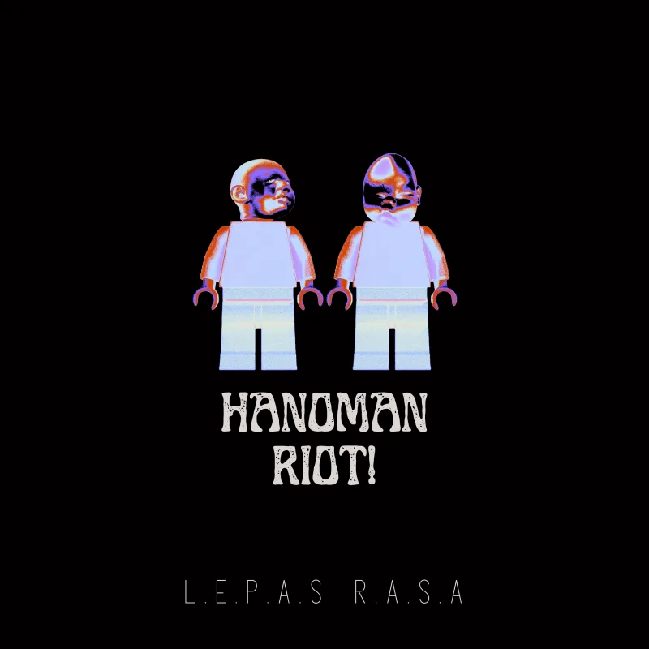

EP LEPAS RASA · 26 AGUSTUS 2026 · EMPAT LAGU
Api yang mereka nyalakan, kita yang pakai.
Empat lagu tentang arah yang hilang, beban yang tidak semua harus dibawa, dan alasan untuk bertahan.

Artwork Bradley Green · lisensi Artgrab
- 01Tersesat3:14
- 02Tentang Gurindam2:26
- 03Relung4:08
- 04Pelik Dan Pelikan3:16
RADIO · PUTAR DI HALAMAN
Geser objek. Tekan tombol daya.
SEKARANG
Tersesat
00:00 / 3:14
Tarik untuk memutar objek · klik tombol daya untuk bunyi
SEDANG DIPUTAR
Tersesat
Pemutar Spotify dimuat saat tombol ditekan.
PEMUTAR RESMI · SPOTIFYBelum dimuat
Pratinjau pendek tanpa akun. Lagu penuh butuh masuk ke Spotify di peramban ini.
RILIS
Lepas Rasa, empat lagu.
Rilis 26 Agustus 2026 · total 13:04
- 013:14
Tersesat
Ditulis 2011–2012 di Batam
- 022:26
Tentang Gurindam
Nasihat lama, dibaca hari ini
- 034:08
Relung
Isi kepala yang jadi beban
- 043:16
Pelik Dan Pelikan
Alasan untuk bertahan
Artwork Bradley Green · lisensi resmi Artgrab
Produksi, mixing, mastering, drum Muhammad Irfan Hafiz
Formasi belum lengkap.
Drummer, gitaris, bassis — Bandung.
DM Instagram